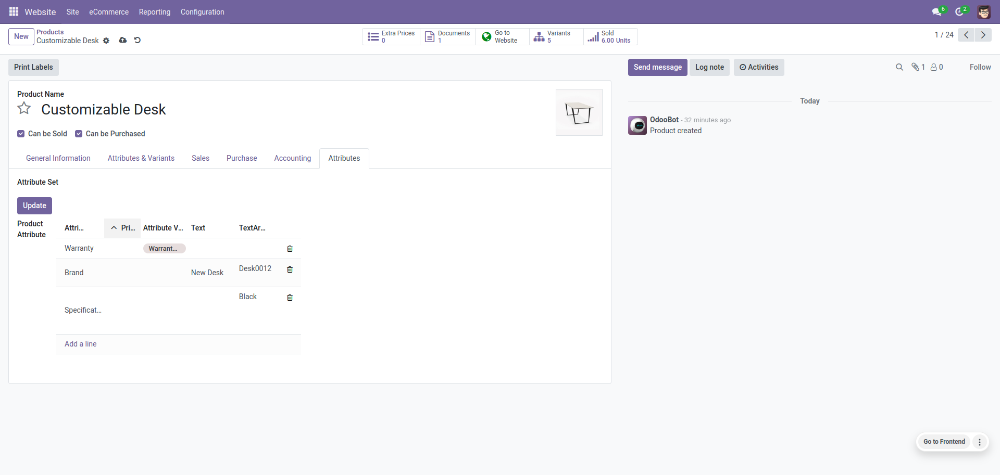

Product Advanced Attribute
The Product Advanced Attribute give some advanced filtering ability for your Odoo eCommerce store. Enhance your product list pages and product detail page by displaying product variants from an attribute. Give ability to auto detect the fields during data addition to your product manager.
Key Features
Ability to detect the fields during data addition.
Choice of the separator between product attributes and variants in admin.
Ability to add new attribute types. TextBox [Not store in attribute values] , Text Area [Not store in attribute values] , Yes/No Options [Auto create]
Enhanced management of attributes in website Use in Search, Use in Compare, Use in Filter, Use in Product Attributes table, Priority Sequence
Ability to load all attributes base on attribute set selection.
Extends the standard behaviour and makes it possible to change the attribute set.
Display product counts on filtered options.
Ability to filter products and remove applied filter selection.
How it Works?
Ability to detect the fields during data addition.
Allocate multiple attributes under single attribute set.
Support new attribute types
Text Box Text Area Yes/No
Enhanced management of attributes in website.
Selected attribute value allow in website search.
Easily control which attribute show in compare list
Selected attributes visible in filter section
Product attribute table list easily manage

Manage your attributes priority sequence for compare , filter and attribute table.
Not "Create Variant" types attributes separate tab in product.
Auto load all attributes base on attribute set selection.
Extends the standard behavior and makes it possible to change the attribute set.
Show product counts of filtered options.
Display applied filtered list on top and remove applied filter selection.
You may also like


Technical Help, Queries & Support
Please feel free to contact for any suggestion, issue & queries